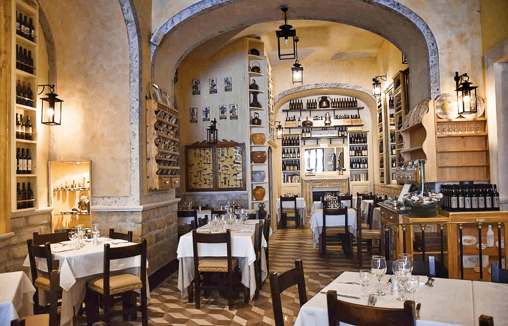

Our Story
A Family Passion for Authentic Italian Flavours
Founded in 2015 in the heart of Cape Town, Lekker Italia began as a small family kitchen with a big dream — to bring the true tastes of Italy to the Mother City. Our head chef trained in the trattorias of Rome and the osterias of Milan.
Every dish carries generations of culinary tradition. Our carbonara is made the Roman way with guanciale and Pecorino Romano. Our osso buco simmers for hours until the veal melts off the bone.
"Good food is all the sweeter when shared with good friends."